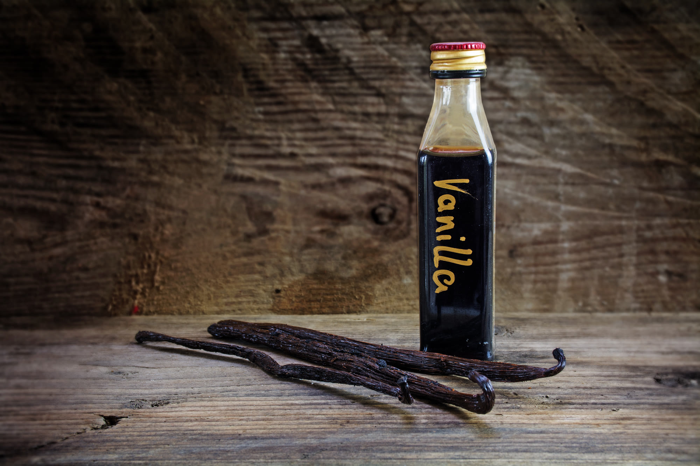
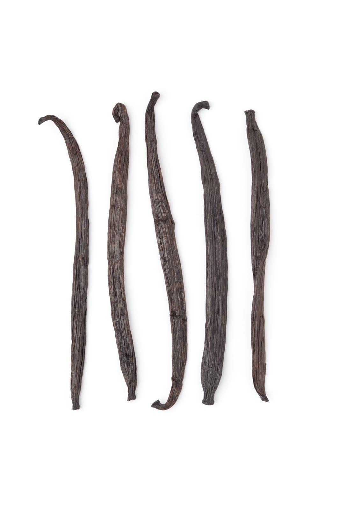
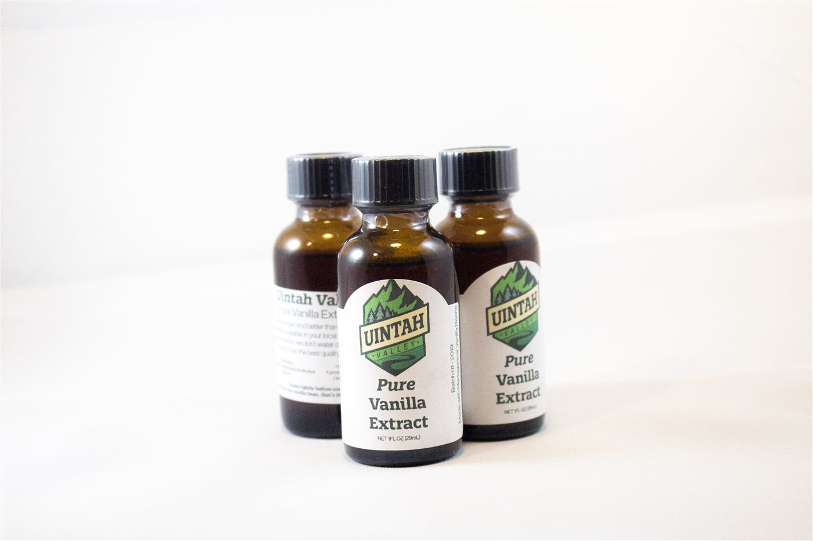

Vanilla
I’m serious about Vanilla Extract. I don’t know why, but it’s important to me. If the label says “Water” your extract is watered down. If the label has more than 2 ingredients (vanilla beans and alcohol) you’re being fed a sub-par product.

This has become a hobby and side hustle for me. Each type of bean is different, and its provenance has an effect on the flavor, strength, and tone of the vanilla extract itself. I prefer Madagascar beans, they’re smooth and creamy, not too sweet. They impart just the right amount of that good vanilla flavor and aroma for my process.


Our beans are more concentrated per jar, and are aged for a set period of time, so we don't bottle too soon. While most people split the beans, we cut them by hand because I have found that it allows the flavorings to be extracted more evenly across the aging period, giving the extractives and vanilla time to get to know each other and really blend. Extract is mostly waiting and patience provides a superior result.


If you want some vanilla (and if I have any available) you can get some at UintahValley.com